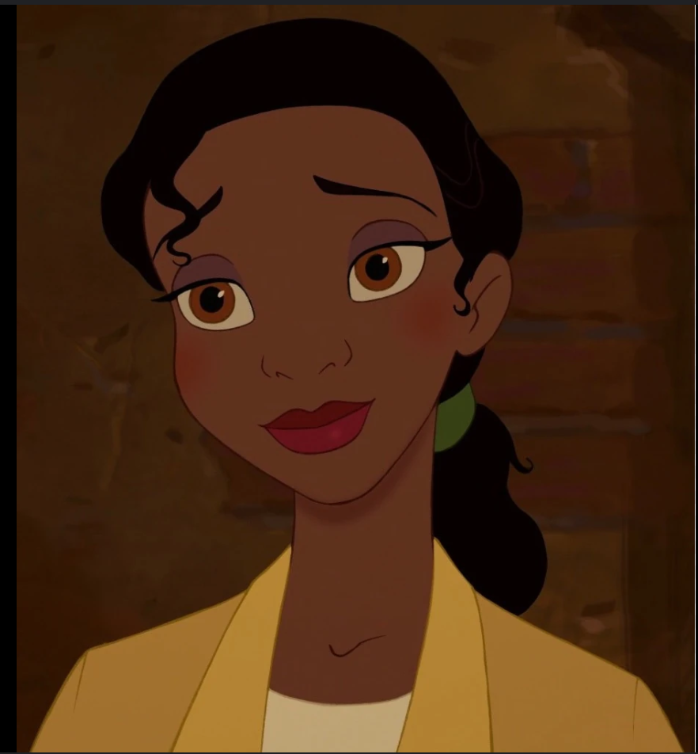

The Princess and the Frog (2009) is a Disney animated film set in 1920s New Orleans. It follows the story of Tiana, a hardworking young woman with dreams of opening her own restaurant. Unlike traditional Disney princesses, Tiana is independent and ambitious, emphasizing hard work over magical solutions. The movie blends elements of fairy tales and Southern charm, drawing inspiration from The Frog Prince.
Criminal Minds is a long-running American crime drama series that aired from 2005 to 2020, spanning 15 seasons. The show centers on the Behavioral Analysis Unit (BAU), a team of elite FBI profilers who analyze the country's most dangerous serial killers and criminals to anticipate their next moves and stop them. Known for its dark, intense storylines and psychological depth, Criminal Minds delves into the minds of both the criminals and the agents tasked with catching them.
Moana (2016) is a Disney animated film that tells the story of Moana Waialiki, a strong-willed young girl from the Polynesian island of Motunui, who embarks on a daring adventure to save her people. The film is a celebration of Polynesian culture, mythology, and nature, featuring stunning animation, memorable music, and a powerful story of self-discovery and courage.